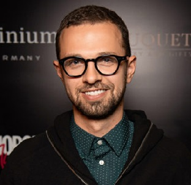
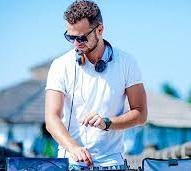
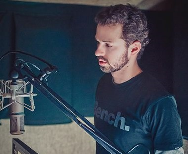

Обо мне
 Я Антон Птушкин — украинский шоумен, диджей и сценарист. Обрел популярность благодаря работе ведущим в популярной программе на телеканале «Пятница!» «Орел и решка. Перезагрузка». Веду два своих проекта на YouTube о путешествиях: один основной на русском языке, второй — на английском. На мой канал подписано более 1,5 млн и 28 000 человек соответственно. Первые видеозаписи появились более 8 лет назад и были посвящены интервью с людьми, увлекающимися музыкой. Также на сайте soundcloud.com я размещаю треки, а страничка имеет более 2800 фоловеров.
Детство и юность
 Родился 22 мая 1984 года в Луганске, Украина. Окончил Восточноукраинский национальный университет имени Владимира Даля по специальности «социология». Начинал с работы промоутером, а также писал музыку и выступал как диджей. Организовал свое собственное шоу под названием Open Air «8» и несколько прославился среди молодежи в родном Луганске.
Путь к славе
 В нашей жизни есть особенность: нужно вовремя уехать, если чувствуешь стагнацию. В 28 лет я решил переехать в Киев, что, несомненно, сказалось на успехе в творчестве. Начал работу на радио над программой SUN SHINE, которая стала одной из самых популярных и вошла в ТОП лучших. Далее последовало предложение занять должность программного директора на канале Lounge FM — это также успех. Следующим шагом по карьерной лестнице стала работа на телевидении. В 2015 году решил попробовать себя в роли ведущего и посетил кастинг программы «Орел и решка». К сожалению, на тот момент попытка не удалась, но продюсеры предложили мне иную вакансию — сценарист проекта «Опасные гастроли». На этой должности я проявил себя исключительно с положительной стороны, и вот уже в 2017 году на экранах стартовал новый сезон программы «Орел и решка. Перезагрузка», где ведущими выступили я и Настя Ивлеева. Ее смысл заключался в том, чтобы повторить маршруты первого сезона и посмотреть, что изменилось с того момента и, возможно, открыть какие-то новые места и приключения.
На данный момент

На данный момент живу в Киеве. Покинул программу «Орел и решка», чтобы больше уделять времени самостоятельному творчеству: пишу музыку и снимаю свои ролики о путешествии, которые выкладываю в своем блоге на YouTube-канале. Самыми популярными видео на моем YouTube-канале сейчас являются:
- Дубай. Экскурсия по богатой жизни.
- Япония, которая взрывает мозг.
- Чернобыль сегодня: туризм, радиация, люди.
- Австралия, которую вы не знаете.
- Канада: легалайз, эмиграция, красоты.